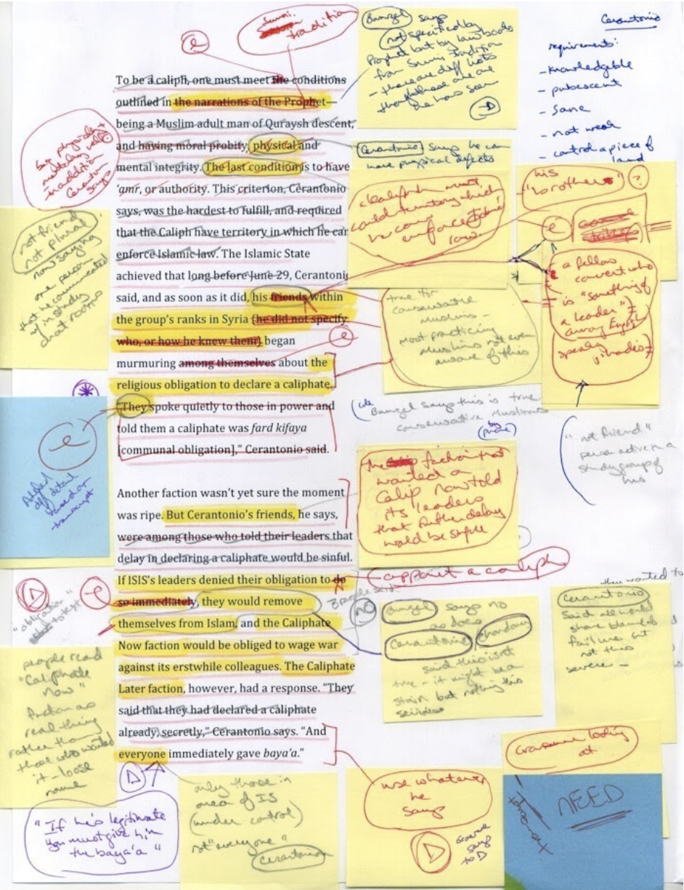
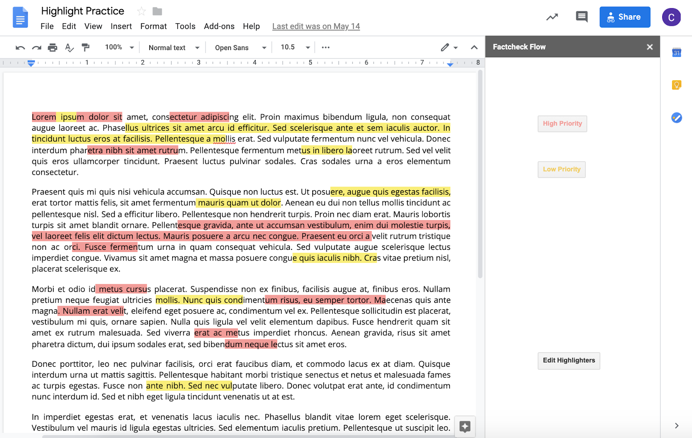
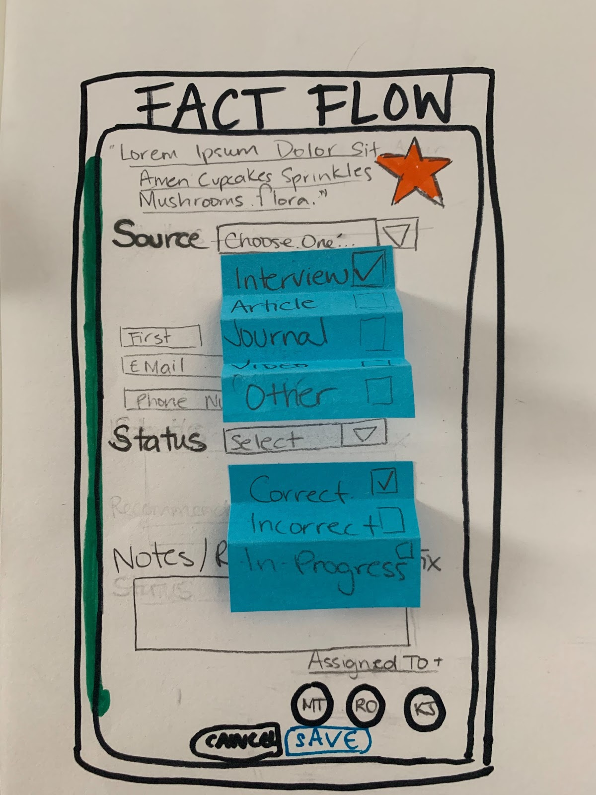

The Knight Lab is a community at Northwestern University that harnesses technology and integrates it with journalism in new and innovative ways. Fact Flow was a project supported by this community.
Project Overview
Spring 2019
Team Members:
Fact-checking refers to verifying all factual content in an article before it gets published. This is a common practice in the world of journalism. The traditional practices are often a messy and non-transparent process - even non-existent for web news organizations. Our team’s task was to create a solution to streamline and organize this process in 10 weeks. Our solution was to make a Google Doc plugin that streamlines and digitizes the fact-checking process for the editorial team (writer, editor, fact-checker).
My Role
My role on this team was in two parts: engineering and design. For the engineering portion, I was tasked with creating the google add-on, using GoogleScript, and connecting it to our firebase backend. My other task was to design the add-on.
Design Process
Designing for this problem was particularly difficult because there is no universal strategy or process that fact-checkers follow. Every individual’s process could have completely separate criteria, or abbreviations. One person could circle misspelled words while another highlights them with a specific color. Some people use only one color throughout the whole process while others have a color coded key. Our job was not only to design a tool to help streamline this process, but also to make a universally accepted process to fact-checking. This proved to be the most difficult aspect of the design process, because we initially were not sure if we should make our product flexible or strict. Through many cycles of iterative design, we found a method that worked cohesively for us.
When it comes to fact-checking, all information is checked. This means quotes, names, dates, weather, measurements and conversions, spellings, historical quotes assumed to be true, even things you know are true and more. We initially started with a design that allowed the users to customize all their highlighting and input information as they saw fit.
However, this implementation was not realistic in terms of storing and retrieving information from our database. We then pivoted to a more structured approach. This method was good, because it allowed for uniformity but also gave the option to input any additional information that was missing.
Another challenge was the limiting factors of Google Add-ons and GoogleScript and the lack of documentation. Though the learning curve was steep, we were able to create an MVP by the end of our term.